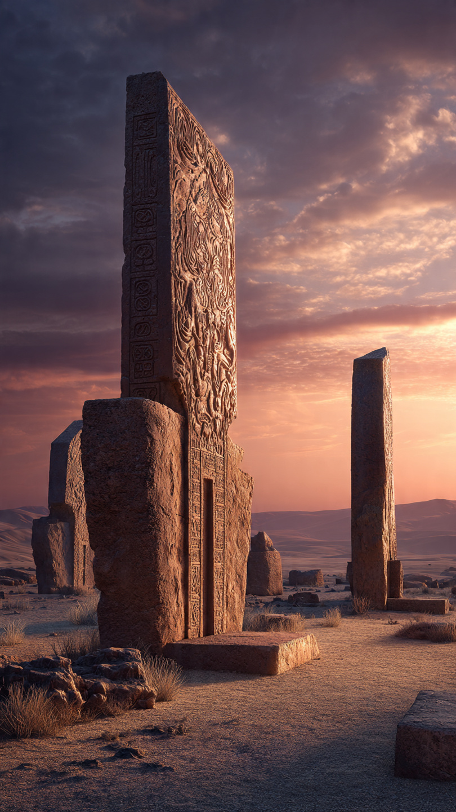
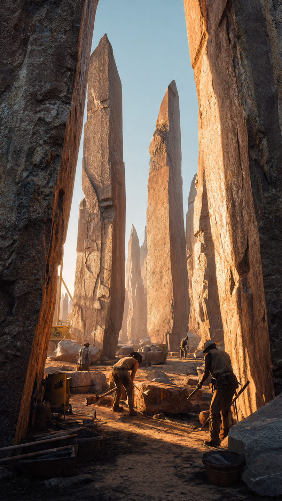

```html id="0x8nvs"
المعبد الذي حيّر علماء الآثار لأنه أقدم من الزراعة | قصص تاريخية
```
في جنوب شرقي تركيا، وعلى قمة تل يُعرف باسم غوبكلي تبه، اكتشف علماء الآثار موقعًا غيّر كثيرًا مما كنا نعتقده عن بدايات الحضارة البشرية.
فعندما بدأت أعمال التنقيب في تسعينيات القرن العشرين، ظهرت أعمدة حجرية ضخمة منحوتة بعناية، تزن بعضها عشرات الأطنان.
وكانت مرتبة في دوائر هندسية دقيقة، ومزينة بنقوش لحيوانات مثل الثعالب، والثعابين، والطيور، والعقارب.
لكن الأمر الأكثر إدهاشًا لم يكن شكل المعبد...
بل عمره.
أظهرت الدراسات أن غوبكلي تبه يعود إلى نحو 9600 سنة قبل الميلاد، أي قبل أكثر من أحد عشر ألف عام.
وهذا يعني أنه أقدم من الأهرامات المصرية بحوالي سبعة آلاف عام، وأقدم من نصب ستونهنج البريطاني بآلاف السنين أيضًا.
وكان هذا الاكتشاف مفاجئًا، لأن العلماء كانوا يعتقدون أن البشر لم يبدأوا في بناء المنشآت الضخمة إلا بعد ظهور الزراعة والاستقرار.
لكن غوبكلي تبه قلب هذه الفكرة رأسًا على عقب.
في ذلك الوقت، كان معظم البشر يعيشون حياة الصيد وجمع الثمار.
ولم تكن القرى الزراعية قد انتشرت بعد.
ومع ذلك، استطاع هؤلاء الناس نقل كتل حجرية هائلة، ونحتها، وترتيبها بدقة مذهلة.
ولا تزال الطريقة التي استخدموها في تنفيذ هذا العمل محل دراسة حتى اليوم.
فلم يعثر الباحثون على أدلة تشير إلى استخدام العجلات أو الأدوات المعدنية، لأنها لم تكن معروفة في ذلك العصر.
ومع كل موسم تنقيب، ظهرت أعمدة جديدة تحت التربة.
وأدرك العلماء أن الجزء المكتشف لا يمثل سوى نسبة صغيرة من الموقع.
لكن السؤال الأكبر بقي دون إجابة:
لماذا بنى هؤلاء الناس هذا المكان الضخم قبل ظهور المدن والزراعة؟
هذا ما سنعرفه في الجزء الثاني.
📷 الصورة رقم 1

منذ اكتشاف غوبكلي تبه، حاول علماء الآثار فهم الغرض الحقيقي من هذا المكان.
فلم يعثروا على بيوت للسكن، أو شوارع، أو آثار لمدينة كبيرة حوله.
وبدلًا من ذلك، وجدوا دوائر حجرية ضخمة وأعمدة على شكل حرف "T"، تزينها نقوش دقيقة لحيوانات برية ورموز غامضة.
ولهذا يرجح كثير من الباحثين أن الموقع كان مركزًا للاجتماعات أو الطقوس الدينية، وليس مدينة يعيش فيها الناس بشكل دائم.
وأثار ذلك سؤالًا مهمًا.
إذا كان الناس في ذلك العصر يعيشون على الصيد وجمع الثمار، فكيف تمكنوا من تنظيم مئات الأشخاص لبناء هذا المشروع الضخم؟
يرى بعض العلماء أن التعاون في بناء أماكن العبادة أو التجمع قد يكون سبق ظهور الزراعة، بل وربما شجع الناس لاحقًا على الاستقرار وزراعة الأرض لتوفير الغذاء للعمال والمشاركين.
وهذه الفكرة غيّرت الطريقة التي ينظر بها الباحثون إلى نشأة الحضارات.
كما اكتشف علماء الآثار أن بعض أجزاء غوبكلي تبه دُفنت عمدًا بعد فترة من استخدامها.
ولم يكن ذلك نتيجة زلزال أو انهيار طبيعي.
بل يبدو أن سكان المنطقة قاموا بردم بعض الدوائر الحجرية بأنفسهم، ثم بنوا منشآت جديدة فوقها.
لكن السبب الحقيقي وراء هذا التصرف لا يزال مجهولًا، وهو واحد من أكبر ألغاز الموقع.
ومع استمرار الحفريات، يتضح أن الجزء المكتشف حتى الآن يمثل نسبة صغيرة فقط من الموقع الكامل.
ويعتقد الباحثون أن كثيرًا من أسراره ما زال مدفونًا تحت الأرض، وأن السنوات القادمة قد تكشف معلومات جديدة عن حياة البشر في تلك الفترة المبكرة من التاريخ.
لكن...
لماذا يُعد غوبكلي تبه أحد أهم الاكتشافات الأثرية في العصر الحديث؟
وكيف غيّر فهم العلماء لبدايات الحضارة الإنسانية؟
هذا ما سنعرفه في الجزء الثالث والأخير.
📷 الصورة رقم 2

اليوم، يُنظر إلى غوبكلي تبه باعتباره واحدًا من أهم الاكتشافات الأثرية في العصر الحديث.
فقد أجبر العلماء على إعادة التفكير في كثير من الأفكار القديمة حول نشأة الحضارات.
ففي الماضي، كان الاعتقاد السائد أن الإنسان استقر أولًا، ثم مارس الزراعة، وبعد ذلك بدأ في بناء المعابد.
أما اكتشاف غوبكلي تبه، فقد أظهر أن البشر ربما شيدوا أماكن ضخمة للاجتماع أو الطقوس قبل ظهور الزراعة المنظمة، وهو ما فتح بابًا واسعًا للنقاش بين الباحثين.
ورغم التقدم الكبير في الدراسات الأثرية، لا تزال أسئلة كثيرة بلا إجابة.
فلا أحد يعرف على وجه اليقين من قاد بناء هذا الموقع، أو كيف نُقلت الأعمدة الحجرية الضخمة، أو المعنى الحقيقي للرموز والحيوانات المنقوشة عليها.
ولهذا يستمر علماء الآثار في إجراء الحفريات والدراسات، على أمل أن تكشف الاكتشافات القادمة مزيدًا من أسرار هذا المكان الفريد.
وفي عام 2018، أُدرج غوبكلي تبه ضمن قائمة مواقع التراث العالمي لليونسكو، تقديرًا لقيمته التاريخية والإنسانية.
وأصبح الموقع مقصدًا للباحثين والزوار من مختلف أنحاء العالم، لأنه يقدم لمحة نادرة عن حياة البشر قبل أكثر من أحد عشر ألف عام.
وكل عام، تكشف أعمال التنقيب تفاصيل جديدة تساعد على فهم تلك الفترة الغامضة من تاريخ الإنسان.
إن قصة غوبكلي تبه تذكرنا بأن التاريخ لا يزال يخفي أسرارًا كثيرة تحت الأرض.
فكل اكتشاف جديد قد يغير ما نعرفه عن الماضي، ويثبت أن الإنسان كان قادرًا على الإنجاز والإبداع منذ آلاف السنين.
ولهذا سيظل هذا المعبد القديم واحدًا من أكثر المواقع الأثرية إثارة للدهشة، ودليلًا على أن بعض أعظم أسرار التاريخ لم تُكشف بعد.
🏛️📜 انتهت القصة 📜🏛️